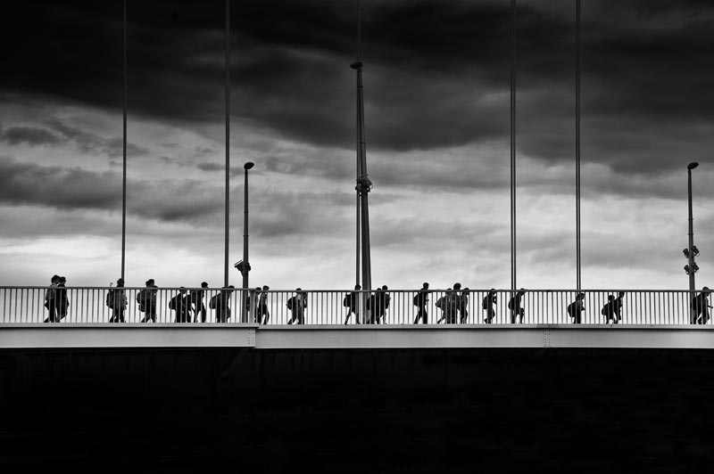

AKTUELLE AUSSTELLUNGSTERMINE 2014
fusion ACHT - Junges Forum Siegburg
Luisenstr. 80 53721 Siegburg
Vernissage 06. September 2013 19:00 Uhr
Ausstellungsdauer 06.09 bis 22.09.2013
presse lesen
19. Kunstausstellung NATUR - MENSCH 2013
St. Andreasberg Nationalpark Harz
Vernissage und Verleihung des Andreas-Kunstpreises 2013 21.September 2013 19:00 Uhr
Ausstellungsdauer 22. 09 bis 19.10. 2013
FOTOGRAFIE LICHT UND SCHATTEN -URBANE RÄUME 2012/2013
Text zu der Fotostrecke
Das Schwarz des Schattens bildet Räume des Geheimnisvollen und das Licht zeichnet die Grenzen zu den Zonen des Schattens. Das Schwarze ist weder Leere noch Raum.
Unterschiedliche Emotionen und Fragen können beim Betrachter der Fotografien entstehen.
Was verbirgt sich in der Schwärze des Schattens?
Wie ist das nicht sichtbare innere Bild gestaltet?
Welchen Raum bietet das Schwarz dem Betrachter ein Bild für sich selbst weiter zu denken und zu sehen?
In der Serie LICHT UND SCHATTEN werden urbane Atmosphären zum Gegenstand der Darstellung. Das Schwarze soll als Bildfläche und Bühne für das Licht gleichermaßen stehen. Es entsteht eine Zwischenwelt, die zwischen Realität und Fiktion nicht mehr unterscheiden will. Es ist für mich eine Reise zu gefühlten Bildern und ebenso eine Suche nach Orten, die es gibt und die es doch nicht gibt.

Budapest 2012
NEU NEU NEU NEU NEU NEU NEU NEU NEU NEU NEU NEU
FOTOBUCH
-ZWISCHEN 2 UND 4 -Köln-
Fotobücher ansehen